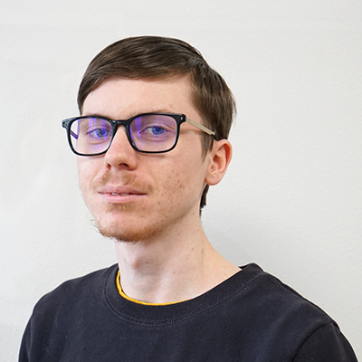

Présentation
Théo Dumont
Je m'appelle Théo Dumont, j'ai 19 ans et je suis actuellement en seconde année de BTS SIO à
Dijon. Mon objectif est d'avoir assez de connaissance pour travailler et m'investir en tant que
développeur logiciel. C'est depuis mes 12 ans que l'informatique a pris une part importante dans
ma vie. Mais ce qui m'intéressait le plus à l'époque c'était d'être développeur de jeux vidéo. Mais
au fur et à mesure que mes connaissances se développaient dans le domaine du développement
informatique grâce à python, je me suis de plus en plus écarté de mon objectif de départ. J'ai
décidé de faire ce BTS pour avoir plus d'exercices pratique que théorique et de découvrir de
nouveaux langages qui me permettent d'ouvrir davantage mes horizons.